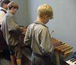
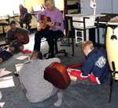
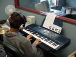
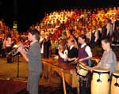

Teacher Professional Development Materials Teacher Professional Development Materials |
The music suite – Tauranga Intermediate School
Organisation/Planning
|
|
|
Carol had to consider the following factors in developing a music suite that would enhance learning:
- backing up funding requests to the board of trustees
with informed, organised research, documentation
of rationale*, and good records of operational
purchases;
- building up equipment and instruments gradually,
making guitars and keyboards a priority;
- providing bottom-line features necessary
for creating a good space for recording music,
including:
- attention to sound-bounce, which meant
using soft furnishings and ensuring no
right-angles;
- room-to-room speakers;
- studios with two-way windows;
- plenty of lockable storage space for equipment.
* A school survey found 85 percent of students
in the school's four gifted and talented classes were
musically gifted. This survey and several
international studies – Champions of Change, being the most widely publicised
– informed the school's arts policy by confirming
the positive cross-curricular impact music has
on other learning.
|
All the time I was drawing parallels between what I'd experienced with music making and music studios and what music experiences we wanted to provide for the students.
Carol Storey
|
|
|
When drawing up the long-term music plan, Carol
selected as her focus the following achievement
objectives from The Arts in the New Zealand
Curriculum (2000, p. 68):
Communicating and Interpreting in Music – Level 3
Students will prepare and present music, using basic
performance skills and techniques, and respond to
live music performances.
Developing Ideas in Music – Level 4
Students will use musical elements, instruments,
and technologies to improvise and compose simple
musical pieces.
The year's music unit plans included all four strands, which
in practice are closely interrelated with the two focused
achievement objectives.
|
The aim is for the students to develop a love of music.
Carol Storey
|
|
|
Once the new music suite was functional, the Tauranga Intermediate School Prospectus
(2002, p.6) was written to reflect the same achievement objectives:
The focus in the Year 7 classes is to develop instrumental skills for playing in a group.
The focus in the Year 8 classes is for students to compose songs in groups and record them in our music studio.
|

|
|
Before the new music suite
Before 2001, 24 of the 32 classes had music lessons in the one-room prefab (pictured
on the introductory page). They received nine 45-minute lessons each, in half class lots, approximately 17 students at a time.
Some of the more musically confident teachers also took their homeroom classes for music, supported by the music teacher, and made use of what few resources were available for classroom use.
After the new music suite
Since the music suite opened in 2001, every student in the school receives six 1½-hour sessions per year.
The music specialist is responsible for all planning, teaching, monitoring, assessing, and reporting on student achievement in the music programme.
There is an up-to-date curriculum programme in a fully equipped music suite.
|

|
|
Instruments from the old music room have been bar-coded and may be borrowed from the school library.
Classroom teachers are encouraged to integrate music into their homeroom programme where appropriate.
All students and staff are encouraged to participate in extra-curricular music activities, such as participation in and/or attendance at performances, choir, orchestra, rock bands, and out-of-hours classes in instrumental tuition.
Specialist music groups
Development of the music suite has strengthened the school's music programme, providing a learning environment geared to students' needs, and implementing the arts curriculum statement.
|

|
|
Performance opportunities include the following:
Kapa haka
More than 100 students belong to the kapa haka group led by Jack Te Moana, the Māori language teacher.
Choir
Carol conducts the 60-student choir that regularly performs at music festivals and official occasions.
Orchestra
About 40 students are in the orchestra. An open policy allows students to join throughout the year, because:
- they gain confidence playing with a group during
class lessons;
- they make progress learning an instrument in class;
- they change their priorities;
- their playing skills improve through music tuition outside school hours;
- new students enroll at the school.
|
Children musn't be restricted by your limitations.
Carol Storey
|
|
|
Bands
A jazz band of 10 to 12 students is led by sax/trombone tutor Paul Saunders.
Jack Te Moana has a class band in the bilingual unit.
Carol takes the three rock bands, with six students in each. Two of the bands are in the cokesmokefreerockquest. (Email pbrain@xtra.co.nz for more information about the rockquest.)
Performance
Every Friday assembly features an arts-related performance, and a register is kept of student involvement. Twelve vocal soloists are given opportunities to perform at assemblies, along with choir, orchestra and bands.
|

|
|